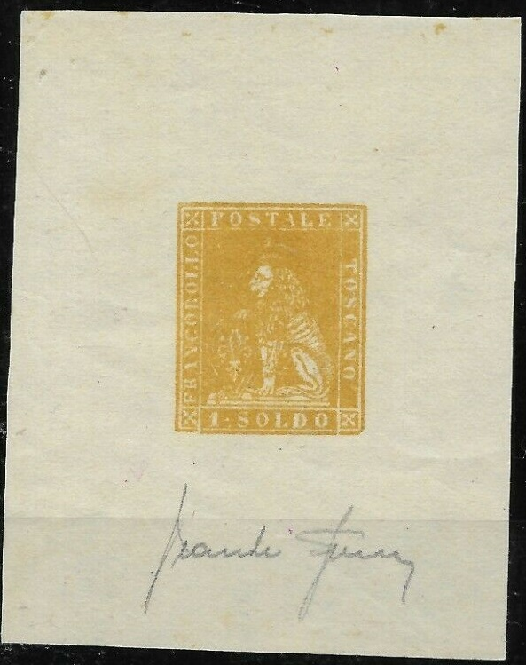
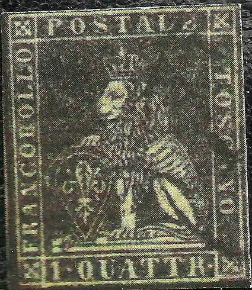
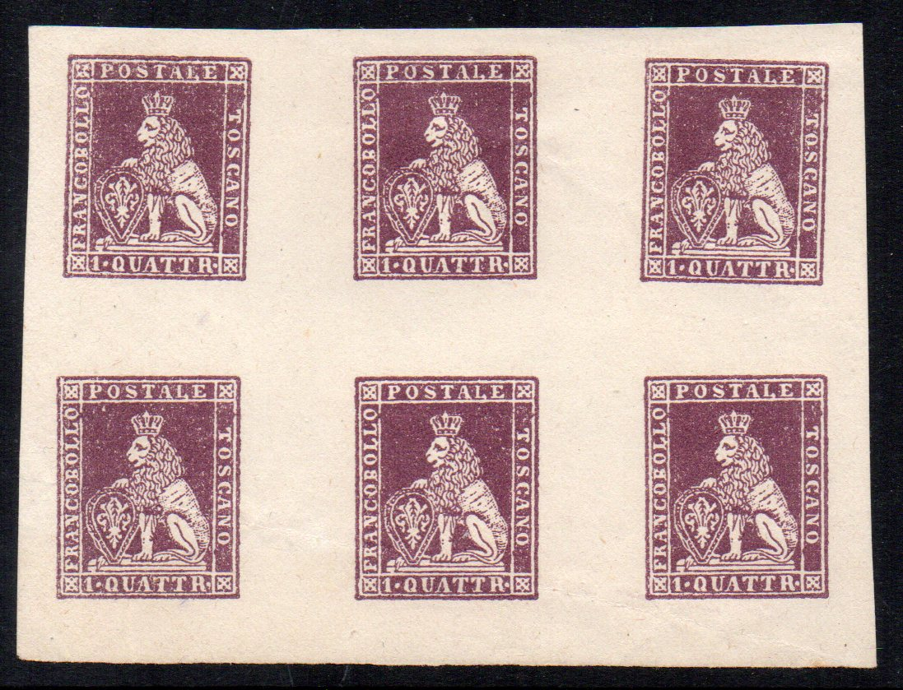
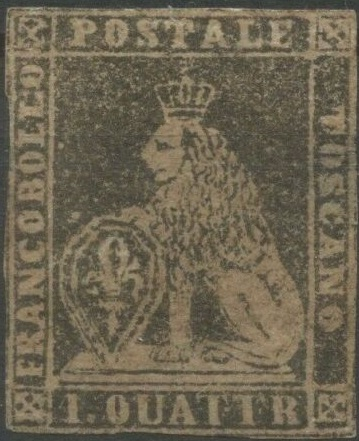
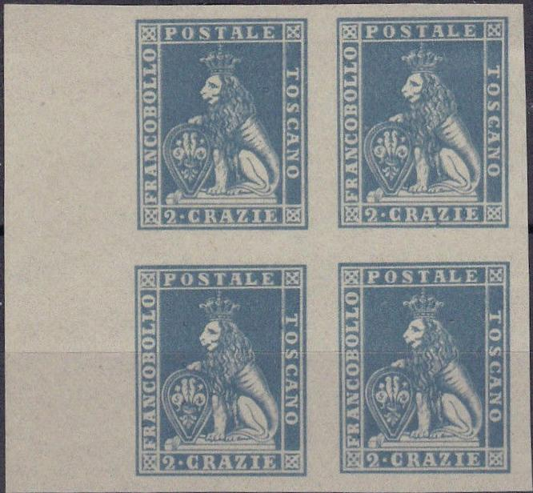

Peter Winter forgeries, with phantasy colors included.
Toscana - Toscane - Toskana
Return To Catalogue - Tuscany 1851 issue, forgeries, part 1 - Tuscany 1851 issue, forgeries, part 2 - Tuscany 1851 issue, forgeries, part 3 - Tuscany Fournier forgeries - Tuscany 1851 issue, more Fournier forgeries - Tuscany 1851, Oneglia(?) forgeries - Tuscany 1851 issue - Tuscany 1860 issue and miscellaneous - Italy
Note: on my website many of the
pictures can not be seen! They are of course present in the
catalogue;
contact me if you want to purchase the catalogue.
Tuscany 1851 issue,
forgeries, part 1
Tuscany 1851 issue, forgeries, part 2
Tuscany 1851 issue, forgeries, part 3
Recently (1980's) the forger Peter Winter made forgeries of these stamps (they appear to always have the same printing flaws):
Peter Winter forgeries, with phantasy colors included.


(Peter Winter forgery of the 1 s, 9 c and 60 c stamp, note that
the cancel on the 9 c and 60 c exhibits the same 'breaks' and
defects; the cancel is probably also printed)


Usually, the word "Replik" is printed at the back.
These forgeries are rather common, there are probably millions of them printed. Peter Winter has made forgeries of all values (even in non-existing colours).
The forger Sperati made very dangerous forgeries of the values 1 s and 2 s value (see for example http://www.seymourfamily.com/rfrajola/Sperati/). The cancels are genuine (Sperati removed the design of a genuine stamp).

Sperati forgery of the 1 s stamp. It has an extra dot below the
dot between '1' and 'SOLDO'. The left part of the 'A' of
'POSTALE' is very weak. The white line below 'POSTALE' is also
very weak. I've seen proofs in yellow and black.

Proof of a 2 s Sperati forgery. The outer frameline is connected
to the inner upper right cross by a blotch of ink. There is also
a blotch of red ink above the 'S' of 'POSTALE' in the frameline.
I've also seen a proof in black color. On the Frajola site a
cancelled Sperati forgery can be seen.
I've been told that this is a Sperati forgery of the 60 c stamp.
However, it is not mentioned in the BPA book on Sperati
forgeries.
The next forgery looks quite reasonable from a distance, however, close inspection reveals that it is actually a photograph!
 


(9 c, 1 q and 60 c photographic forgeries with zoom-ins, note the
dotted patterns of the photographic reproduction)

This badly executed forgery of the 1 cr value was offered on old
documents on Ebay (2005), it has a pencancel, I've seen several
of these forgeries, for other Italian
States forgeries made by the same forger, click here.
An old document with such a forgery



Forgery of the 1 Q in blue (wrong color); sometimes offered as
rare proof. I've also seen it printed in a block of four or six
stamps with very wide margins between the stamps (the margins are
about 1/3 of the size of the stamp). The bottom frameline is
continuous. It looks like the mouth of the lion is more open.
These 'proofs' have no watermark and are quite badly done
(possibly forgeries?). They also exist without value inscription
(in the CRAZIE currency). Note the spot of color in the white
line to the right of the second "O"of "BOLLO"
and that the "L" of "POSTALE" is connected to
the white frameline below it in the 1 Q values.


The same forgery as shown above, but with a piece of the nose of
the lion missing.


This looks like the same forgery type to me, this time it has a
watermark. Note the deterioriation of the borders.
Another forgery of the 1 Q in the wrong color with very wide
margins.

Extremely primitive forgery; 6 c green with 'RU' cancel.
Probably a cut-out from an auction catalogue.

Primitive forgeries of the 1 Q value.
I have very serious doubts about the next stamps:

(60 c with 'PD' cancel, probably a forgery)

A rather deceptive block of four 2 c forgeries. There is a white
smudge in front of the crown. They are often offered together on
Ebay with forgeries of Sicily (see there). I presume these are
recently made forgeries.
Tuscany Fournier forgeries
Tuscany 1851 issue, more Fournier
forgeries
Tuscany 1851, Oneglia(?) forgeries


{kind=link}
{kind=link}
{kind=link}
{kind=link}
{kind=link}
{kind=link}